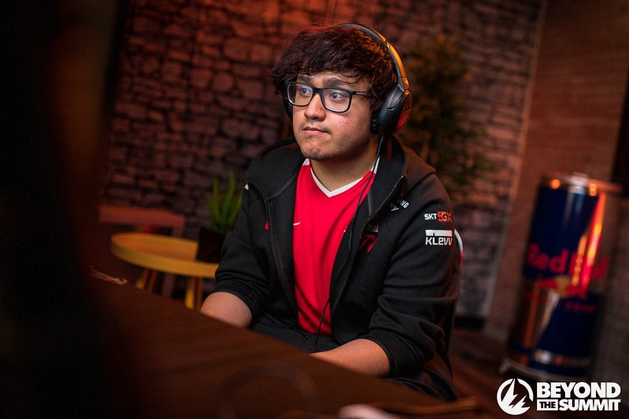

Accronyme de Jeux-Vidéos, E-sport, Speedrun & Tool Assisted Speedrun. Ce site vous permettra de découvrir ou de vous documenter sur 4 sujets :
- Les Jeux-Vidéos
- L'E-sport
- Le Speedrun
- Le Tool Assisted Speedrun
Les jeux-vidéos sont des jeux électroniques qui sont joués sur des appareils tels que des ordinateurs, des consoles de jeux, des téléphones intelligents et des tablettes. Ils peuvent être joués seul ou en ligne avec d'autres joueurs.
Les jeux-vidéos ont commencé à être développés dans les années 1950, avec des jeux simples tels que Tennis for Two et Pong. Depuis lors, ils ont connu un développement rapide et sont devenus un phénomène mondial. Aujourd'hui, il existe de nombreux genres de jeux-vidéos, allant des jeux de stratégie aux jeux de rôle en passant par les jeux de sport et les jeux d'action.
Les jeux-vidéos ont également donné naissance à l'e-sport, une industrie en croissance rapide dans laquelle des joueurs professionnels s'affrontent dans des compétitions en ligne pour des prix en argent et en reconnaissance. L'e-sport est devenu un phénomène mondial, avec des compétitions à grande échelle qui attirent des millions de spectateurs en ligne et sur place.
En plus de l'e-sport, les jeux-vidéos ont également suscité l'intérêt pour des pratiques comme le speedrun, dans lequel les joueurs essaient de terminer un jeu le plus rapidement possible, et le Tool Assisted Speedrun (TAS), dans lequel les joueurs utilisent des outils informatiques pour optimiser leurs performances.Accronyme de Jeux-Vidéos, E-sport, Speedrun & Tool Assisted Speedrun. Ce site vous permettra de découvrir ou de vous documenter sur 4 sujets :
Elden Ring est un jeu vidéo de type action-RPG développé par l'équipe de FromSoftware en collaboration avec Hidetaka Miyazaki et George R. R. Martin. Le jeu est sorti en 2022 sur PlayStation 4 et Xbox One, et a été acclamé par la critique pour son monde ouvert immersif, son gameplay difficile et sa narration captivante.
L'histoire d'Elden Ring se déroule dans un monde fantastique connu sous le nom de « L'Anneau d'Elden ». Le joueur incarne un guerrier solitaire qui se lance dans un voyage pour rassembler les fragments d'un anneau magique qui a été brisé par un maléfique Seigneur des Ténèbres. Au cours de son périple, le guerrier rencontrera des personnages inoubliables, combattra des créatures terrifiantes et découvrira les secrets d'un monde en perdition.
Le gameplay d'Elden Ring est similaire à celui des autres jeux de FromSoftware, avec un système de combat en temps réel et une exploration libre du monde. Le joueur doit affronter des ennemis redoutables et résoudre des énigmes complexes pour avancer dans l'histoire. Le jeu comporte également un système de progression de personnage basé sur l'amélioration des compétences et l'obtention d'équipement puissant.
En résumé, Elden Ring est un jeu vidéo d'action-RPG passionnant et immersif qui comblera les fans de l'univers de FromSoftware et de George R. R. Martin. Si vous aimez les défis difficiles, l'exploration libre et les histoires captivantes, alors Elden Ring est un jeu que vous ne devriez pas manquer.
Hollow Knight est un jeu vidéo d'action-aventure développé et édité par Team Cherry. Le jeu est sorti en 2017 sur PC, Mac et Linux, et a été salué par la critique pour son univers fascinant, son gameplay solide et sa bande-son captivante.
Dans Hollow Knight, le joueur incarne un chevalier solitaire qui explore les profondeurs d'une cité souterraine en ruine, peuplée de créatures mystérieuses et de dangers cachés. Le but du jeu est de combattre des ennemis, de résoudre des énigmes et de découvrir les secrets de la cité en décomposition, tout en échappant aux pièges mortels et aux boss puissants qui se dressent sur votre chemin.
Le gameplay de Hollow Knight est un mélange de combat au corps à corps et de plateformes, avec un système de progression en arbre qui permet au joueur d'améliorer ses compétences et de débloquer de nouvelles capacités pour son personnage. Le jeu est connu pour être difficile, mais récompense les joueurs qui sont prêts à relever le défi avec une expérience de jeu immersive et satisfaisante.
En résumé, Hollow Knight est un jeu vidéo passionnant et fascinant, offrant des heures de divertissement pour les fans d'action-aventure et de jeux difficiles. Si vous cherchez un défi stimulant et une histoire captivante, Hollow Knight est un jeu que vous ne devriez pas manquer.
Mario Kart 8 Deluxe est un jeu vidéo de course développé et édité par Nintendo pour la console Nintendo Switch. C'est une version améliorée de Mario Kart 8, qui était sorti sur Wii U en 2014.
Le jeu met en scène les personnages emblématiques de l'univers de Mario, comme Mario, Luigi, Peach, Yoshi et Bowser, qui s'affrontent dans des courses endiablées sur des circuits inspirés de l'univers de Mario. Le joueur peut choisir parmi un large éventail de personnages, de karts et de motos, chacun ayant ses propres caractéristiques uniques.
Le gameplay de Mario Kart 8 Deluxe est simple et accessible, mais offre aussi une grande profondeur pour ceux qui cherchent à se perfectionner. Le joueur doit contrôler son kart ou sa moto en utilisant les boutons et les sticks de la manette de jeu, tout en collectant des objets pour ralentir les autres concurrents et gagner des avantages sur la piste. Le jeu comporte également un mode multijoueur en ligne et en local, permettant aux joueurs de s'affronter entre amis ou contre d'autres joueurs du monde entier.
En résumé, Mario Kart 8 Deluxe est un jeu de course amusant et divertissant, adapté à tous les âges et parfait pour jouer entre amis. Si vous aimez les personnages de l'univers de Mario et les courses endiablées, alors Mario Kart 8 Deluxe est un jeu que vous ne devriez pas manquer.
Dans Mario Kart 8 Deluxe, il y a un total de 48 circuits de base, répartis dans 8 catégories différentes : les circuits Mario, les circuits animaux, les circuits arctiques, les circuits de ville, les circuits de désert, les circuits de plage, les circuits de montagne et les circuits de lune.
En plus de ces 48 circuits de base, Mario Kart 8 Deluxe inclut également les 16 circuits supplémentaires sortis en tant que DLC pour la version originale de Mario Kart 8 sur Wii U. Ces circuits peuvent être achetés séparément ou dans un pack intitulé « Pack Évasion ».
| Coupe | 1-1 | 1-2 | 1-3 | 1-4 |
|---|---|---|---|---|
| Champignon | Champidrome | Parc Gloupgloop | Pistes aux délices | Temple Twomp |
| Fleur | Circuit Mario | Promenade Toad | Manoir Trempé | Cascades Maskass |
| Coupe Étoile | Aéroport Azur | Lagon Tourbillon | Club Mario | Descente Givrée |
| Couronne | Voie Céleste | Désert Toussec | Château de bowser | Route Arce-en-ciel |
| Oeuf | Circuit Yoshi | Arène Exitbike | Route du Dragon | Mute City |
| Triforce | Mine Wario | Route Arc-en-ciel | Station Glagla | Circuit d'Hyrule |
| Carapace | Prairie Meuh Meuh | Circuit Mario | Plage Cheep Cheep | Autoroute Toad |
| Feuille | Stade Wario | Royaume Sorbet | Piste Musical | Vallée Yoshi |
| Bannane | Désert Sec Sec | Plaine Donut 3 | Autodrome Royal | Forêt Tropical DK |
| Éclair | Horloge Tic-Tac | Égout Piranha | Volcan Grondant | Route arc-en-ciel |
| Feuille | Parc Baby | Pays Fromage | Passage Feuillage | Animal Crossing |
| Cloche | Koopapolis | Route Ruban | Métro Turbo | Big Blue |

Rocket League est un jeu vidéo de sports-action développé et édité par Psyonix. Le jeu est sorti en 2015 sur PlayStation 4 et Windows, et a été très bien accueilli par les critiques et les joueurs pour son gameplay unique et addictif.
Dans Rocket League, le joueur prend le contrôle d'une voiture miniature équipée d'un puissant moteur à réaction, et doit affronter d'autres joueurs dans des matchs de football futuristes. Le but du jeu est de marquer des buts en utilisant sa voiture pour frapper la balle dans le but adverse, tout en évitant les obstacles et en utilisant des boosters pour augmenter sa vitesse et sa maniabilité.
Le gameplay de Rocket League est simple à apprendre, mais offre une profondeur et une complexité pour les joueurs qui cherchent à se perfectionner. Le joueur doit maîtriser les techniques de conduite, de frappe et de défense pour devenir un véritable maître du football futuriste. Le jeu comporte également un mode multijoueur en ligne compétitif, permettant aux joueurs de s'affronter dans des matchs intenses et palpitants.
En résumé, Rocket League est un jeu vidéo unique et passionnant, combinant les éléments de sports et d'action dans un mélange explosif. Si vous aimez les sports, les voitures et les défis difficiles, alors Rocket League est un jeu que vous ne devriez pas manquer.
Rocket League est un jeu vidéo très populaire dans la communauté des e-sports, avec de nombreux tournois et compétitions organisés chaque année par des organisateurs professionnels. Le jeu est particulièrement populaire en Amérique du Nord et en Europe, avec des équipes professionnelles et des joueurs de haut niveau provenant de ces régions.
Les tournois de Rocket League sont généralement organisés en équipes de quatre joueurs, chacun contrôlant une voiture miniature pour affronter une autre équipe dans des matchs de football futuristes intenses et palpitants. Les tournois peuvent être disputés en ligne ou en personne, en fonction des préférences des organisateurs et des joueurs.
Les prix en jeu dans les tournois de Rocket League peuvent varier en fonction de l'importance de l'événement, mais ils peuvent inclure de l'argent, des prix matériels, des contrats d'équipe et des opportunités de participation à des événements plus prestigieux. Les meilleures équipes et les meilleurs joueurs de Rocket League peuvent également bénéficier de sponsorships et de contrats publicitaires, ce qui peut être très lucratif pour les joueurs de haut niveau.
En résumé, la scène e-sport de Rocket League est très active et compétitive, avec de nombreux tournois et compétitions organisés chaque année pour les joueurs professionnels et amateurs. Si vous êtes un joueur de Rocket League passionné et que vous cherchez à vous mesurer aux meilleurs joueurs du monde, vous devriez envisager de participer à des tournois de Rocket League pour tester vos compétences et peut-être remporter des prix prestigieux.
Voici notamment l'extrait l'audio d'un moment historique de l'E-sport Rocket League :
Il est courant que les joueurs de jeux vidéo professionnels se mesurent entre eux pour déterminer qui est le meilleur dans un jeu donné. Cela peut se faire à travers des tournois organisés par des organisateurs professionnels, des compétitions en ligne, ou simplement en s'affrontant directement dans des matchs individuels.
Pour devenir le meilleur joueur du monde dans un jeu donné, il faut non seulement être habile techniquement et avoir une bonne stratégie, mais aussi être capable de rester calme et concentré en situation de stress, et d'adapter son style de jeu en fonction des adversaires et des circonstances. Le titre de "meilleur joueur du monde" est donc très convoité, et les joueurs les plus talentueux peuvent passer des années à s'entraîner et à s'affronter pour l'obtenir.
Il est important de noter que le titre de "meilleur joueur du monde" n'est pas officiellement décerné par un organisme ou une organisation, et peut donc être contesté par différents joueurs et groupes.
Le joueur qui actuellement conteste cette place de meilleur joueur du mondeem> n'est autre que le jeune prodige Japonais acola (son pseudo ne comporte pas de majuscule à son début).
Depuis le début du jeu c'est le légendaire joueur MkLeo qui domine la compétition est détiens la place de meilleur joueur du monde, mais en cette année 2022, un joueur sortie de "nul part" viens contester cette place ce que l'ont penser tous bonnement impossible en vu des résultat de MkLeo qui ne tombe pas en dessous de la 2nd place à tous les évenements auquels il a participé depuis des années maintenant.
Il fallais donc un joueur avec des résultats à sa hauteur pour venir le concurencer et c'est précisément ce qu'à fais acola durant cette année 2022, voici quelques uns de ces résultats notable de cette années :
Voici maintenant une brève présentation de ces 2 joueurs sous forme de fiche :
acola |
|
 |
|
| Acola à l'Ultimate Summit 5 | |
Informations sur le joueur |
|
| Nom romanisé | Mashita Hayato |
| Date de naissance | 20/07/2006 |
| Pays | Japon |
| Localisation | Kansai |
| Team | ZETA DIVISION |
| Cashprize recolté | 13 677 $ |
| Pseudonyme original | あcola |
Super Smash Bros. Ultimate |
|
| Personnage principale |  Steve Steve |
| Personnage secondaire |  Kazuya Kazuya |
Réseaux sociaux |
|


|
|
MkLeo |
|
|  | |
| MkLeo à l'Ultimate Summit 4 | |
Informations sur le joueur |
|
| Nom | Leonardo Lopez Perez |
| Date de naissance | 20/01/2001 |
| Pays | Mexique |
| Localisation | Mexico City |
| Team | T1 |
| Cashprize recolté | 270 783 $ |
Super Smash Bros. Ultimate |
|
| Personnage principale | |
| Ancien personnage principale |
 Joker Joker |
| Personnage secondaire |
|
Réseaux sociaux |
|


|
|
Le speedrun est une pratique liée aux jeux vidéo dans laquelle le but est d'atteindre le plus rapidement possible un objectif donné, le plus souvent terminer le jeu. Les jeux vidéo nécessitant habituellement des heures de jeu pour être résolus, peuvent parfois être terminés en quelques minutes.
Pour ce faire, les pratiquants de speedrun (parfois appelés speedrunners ou runners) utilisent de nombreuses stratégies spécifiques en optimisant leurs actions pour traverser très rapidement le jeu, voire en exploitant des bugs du moteur de jeu et des raccourcis, pour terminer une partie ou « run » le plus rapidement possible.
Parallèlement aux performances des joueurs humains s'est également développé le « tool assisted speedrun » qui consiste à configurer un programme (un émulateur et plusieurs autres outils) afin qu'il joue à la place du joueur, permettant ainsi des performances impossibles à réaliser par un humain.
Les communautés de speedrun ont pris leur essor avec l'apparition sur Internet de sites web spécialisés consacrés à ce type de jeu et conservant des enregistrements vidéo des meilleures performances en date. Plus récemment, la pratique s'est popularisée autour des sites de partages de vidéos et de streaming ainsi que lors d'événements dédiés a but caritatif.
Le déroulement d'une partie est en général planifié à l'avance : la recherche préalable de la meilleure route à suivre pour un jeu donné est appelée routing. Une fois la route planifiée, les joueurs vont alors tenter d'exécuter leur plan le plus efficacement possible pour atteindre le meilleur temps. Pour battre un record, les joueurs alternent entre l'amélioration de leur performance sur une route existante ou la recherche de nouvelles routes plus efficaces.
Lors de cette recherche, on découvre parfois des raccourcis, ou même la possibilité de progresser dans le jeu sans avoir accompli tous les objectifs requis prévus par les développeurs du jeu : franchir une porte sans en avoir la clé, ou bien sauter une séquence entière de l'intrigue du jeu. Ce détournement du déroulement prévu du jeu, ou sequence breaking, requiert souvent l'exploitation d'un bug ou d'un glitch dans la programme du jeu ou de la console.
L'exploitation de ces erreurs de programmation peut aussi permettre aux speedrunners de faire atteindre aux personnages du jeu des vitesses ou des valeurs de dégâts impossibles lors d'une partie normale. Pour déclencher certains de ces bugs il faut parfois manipuler l'état interne de la mémoire de la console de jeu ou son générateur de nombres pseudo-aléatoires, ce qui exige des actions très précises de la part du joueur.
Les speedruns sont divisés en plusieurs catégories selon que l'objectif est de terminer le jeu entier en un seul run ou seulement une main particulière du jeu :
Il existe également, selon les jeux, différentes contraintes de speedrun selon le niveau de complétion du jeu attendu :
Par ailleurs, il existe de nombreuses catégories et défis spécifiques à un jeu et à sa communauté de joueurs, qui s'imposent des restrictions supplémentaires lors d'une partie : terminer le jeu sans recevoir une seule blessure, utiliser le moins possible une certaine mécanique de jeu (par exemple, le moins de captures possible dans Super Mario Odyssey), ou encore utiliser des périphériques d'entrée différents (tapis de Dance Dance Revolution ou guitare de Guitar Hero par exemple).
Le speedrun de Hollow Knight consiste à terminer le jeu le plus rapidement possible en utilisant des techniques avancées de jeu et en exploitant les faiblesses du jeu pour gagner du temps. Le record du monde actuel en speedrun de Hollow Knight any% sans glitch majeur est de 32 minutes 0 secondes, établi par
speedrunner Lep en novembre 2022.
Un speedrun de Hollow Knight any% sans glitch majeur implique de terminer le jeu le plus rapidement possible sans utiliser de glitches majeurs, c'est-à-dire des erreurs du jeu qui permettent d'obtenir des avantages injustes ou d'accéder à des zones interdites. Cela rend le speedrun plus difficile et plus équitable, car tous les joueurs doivent utiliser les mêmes stratégies et compétences pour gagner du temps.
Le record du monde actuel en speedrun de Hollow Knight any% sans glitch majeur montre à quel point le jeu peut être difficile et exigeant, même pour les joueurs les plus expérimentés. Réaliser un tel exploit nécessite une connaissance approfondie du jeu, une habileté exceptionnelle au combat et une capacité à prendre des décisions rapides et stratégiques. Si vous êtes un fan de Hollow Knight et que vous cherchez un défi stimulant, vous pouvez essayer de battre ce record du monde en speedrun.
Le record du monde Random Seed en 1.16+ sur Minecraft est si optimisé aujourd'hui que la run est en dessous de 9 minutes. Grâce à un générateur multiple de seed qui affiche plusieurs parti en même temps, il peuvent donc déjà commencer avec un bon départ. Pour le contexte, il choisis la seed commencant sur une île car il peux trouver un tréors facilement et ainsi avoir du fer et diamant pour ce faire des outils très rapidement. 2nd étape, récupérer quelques ressources. Il à récupérer une TNT et de quoi faire une plaque de pression en fer, en l'utilisant
Le tool-assisted speedrun (TAS) est réalisé à l'aide d'un émulateur et d'outils informatiques permettant de spécifier les entrées reçues par le jeu, par exemple les pressions sur les boutons de la manette de jeu ou les clics de la souris. L'état complet du programme de jeu peut être sauvegardé à tout moment pour être restauré. Cela permet de rejouer à l'infini n'importe quel passage du jeu, de ralentir ou de mettre en pause son exécution et de choisir précisément les entrées ayant le meilleur résultat possible pour la partie en cours. Ces outils permettent de s'affranchir des limites humaines en termes de compétences et de réflexes, ou même des limitations physiques de la console de jeu. Le joueur peut ainsi exploiter des bugs de programmation, ou des techniques qui ne seraient pas possibles à exécuter en temps réel, ce qui amène certains commentateurs à considérer ce type de speedrun à de la triche (ou cheat dans le jargon des joueurs). Cependant, les outils utilisés pour le TAS ont également permis de révéler des stratégies jusqu'alors inconnues des joueurs, dont certaines ont pu par la suite être exploitées lors de speedruns classiques.